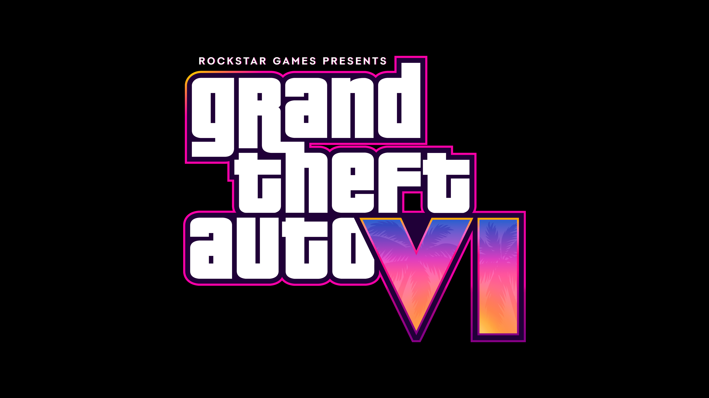
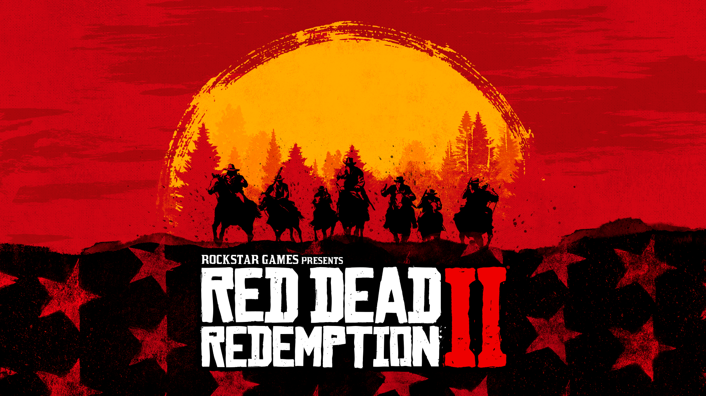
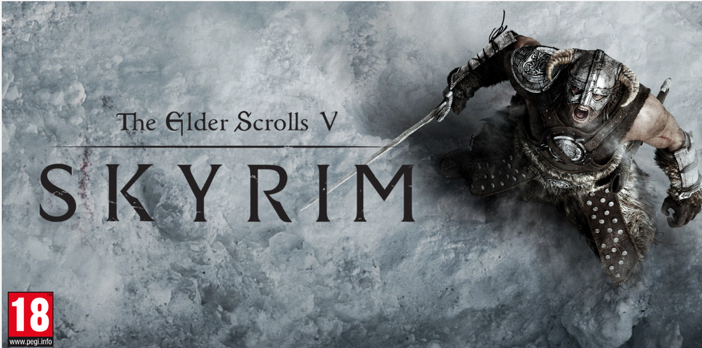
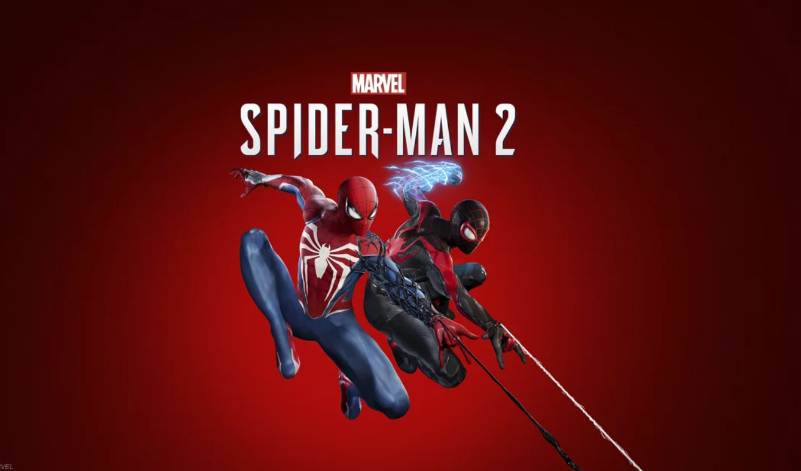
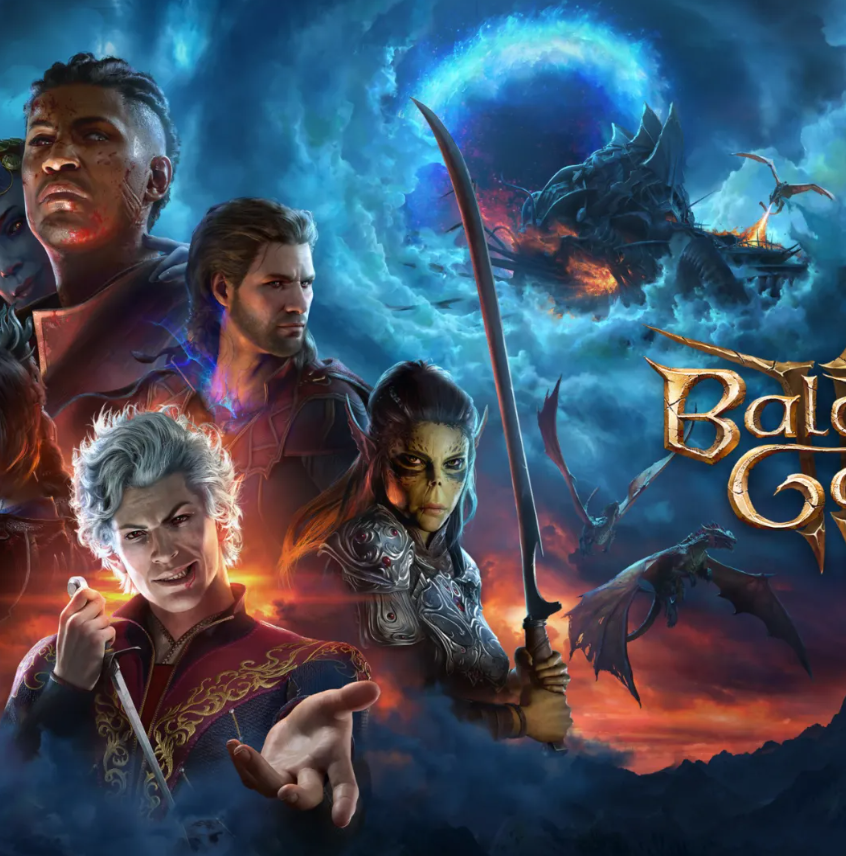
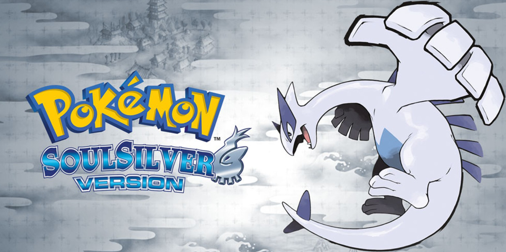

My Favorite Video Games
Now that I am in my late twenties, I do not get to play video games as often as I used to, and I sometimes get this weird feeling of guilt when I do. They are still one of my favorite activities, though. This collection is a mix of games I have played throughout my life — six of my favorites that I could come up with when I sat down to think about it.

Grand Theft Auto
Series | Action-adventure | Rockstar Games
The first GTA game I played as a kid was Vice City — I was way too young for it, and my mom ended up taking it away. Since then, I have played every game in the GTA series, and they are some of the most impressive games I have ever experienced. Rockstar is definitely an incredible gaming studio.

Red Dead Redemption 2
Game | 2018 | Action-adventure | PlayStation 4, Xbox One, PC
This was my first time playing the Red Dead series, and I think it is still the very best game I have ever played, all around. It still holds up against games of today and is a work of true art. I even got my dad to play it.

The Elder Scrolls V: Skyrim
Game | 2011 | Action RPG | PC, PlayStation, Xbox, Nintendo Switch
Skyrim is my favorite RPG of all time, despite the redundancy of it constantly being re-released. I have kind of grown to despise Bethesda, though — Skyrim came out when I was a kid, and now I am a grown man, and they still have not made the next Elder Scrolls game.

Marvel's Spider-Man 2
Game | 2023 | Action-adventure | PlayStation 5
I just recently beat Spider-Man 2, and it was a blast. I was not expecting to love the game as much as I did. The combat and traversal were top notch, and swinging through NYC never got old. The voice acting and writing were a little cringe at times, but I really enjoyed the gameplay.

Baldur's Gate 3
Game | 2023 | CRPG | PC, PlayStation 5, Xbox Series X/S
I never thought I could enjoy a game like Baldur's Gate 3 — it was the very first turn-based RPG I have ever played. It really opened me up to a new genre of gaming, and honestly it is up there with Skyrim among my favorite RPGs. I absolutely love it and the gameplay.

Pokémon SoulSilver
Game | 2010 | RPG | Nintendo DS
As a kid of the 2000s, Pokémon SoulSilver was my favorite installment because it had my favorite starter Pokémon, Totodile. To this day, it is known as one of the best Pokémon games ever made. I am not ashamed to say I still play the series to this day for nostalgia and fun.